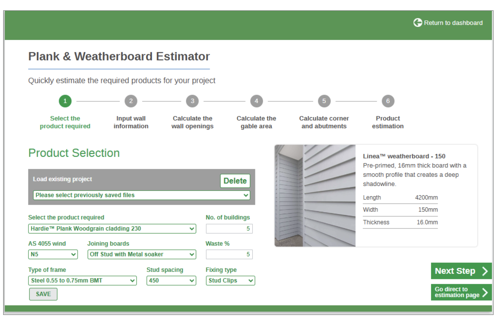
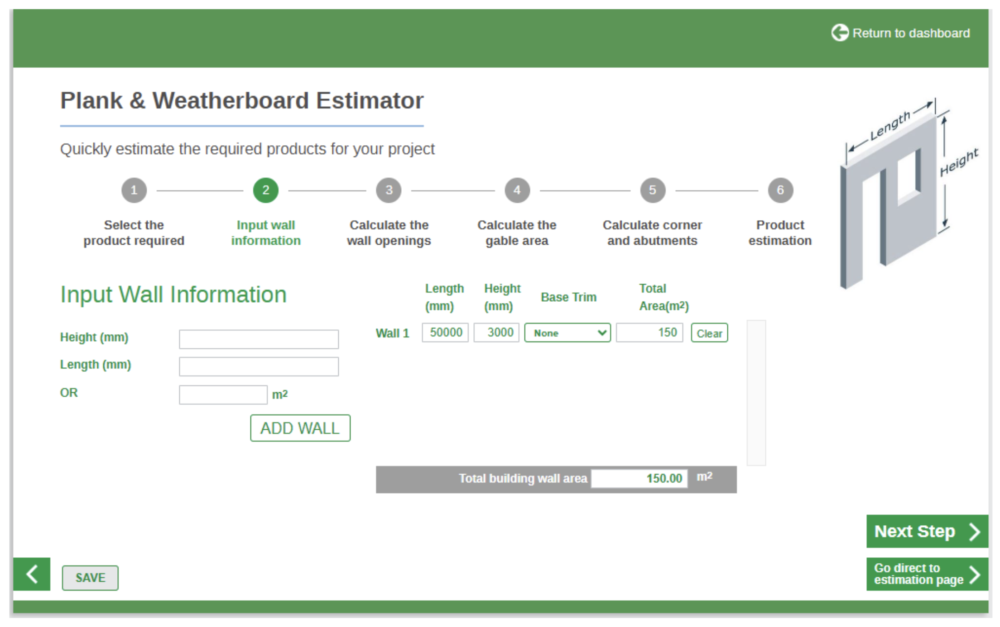
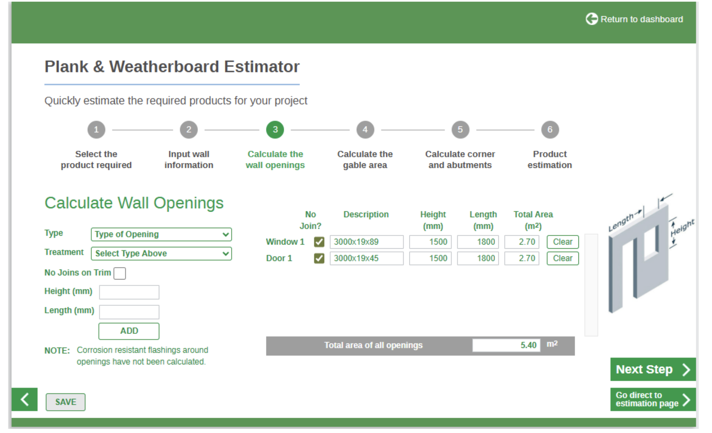
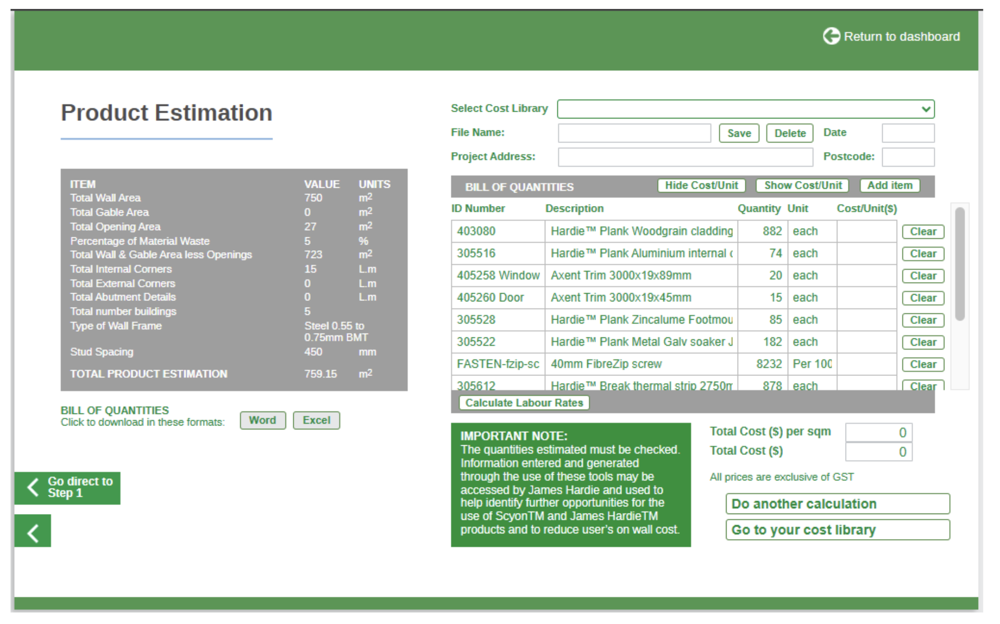
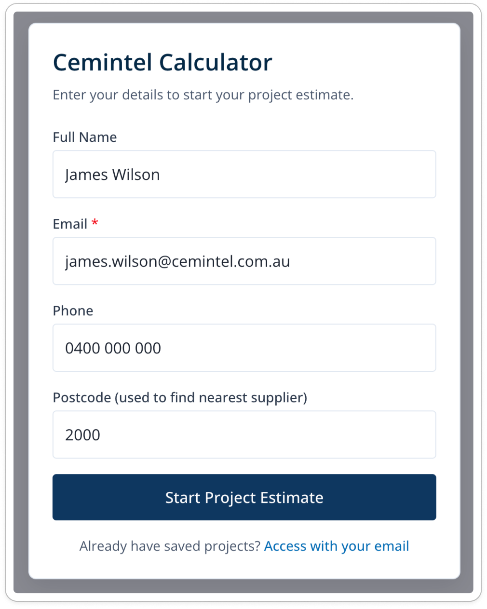
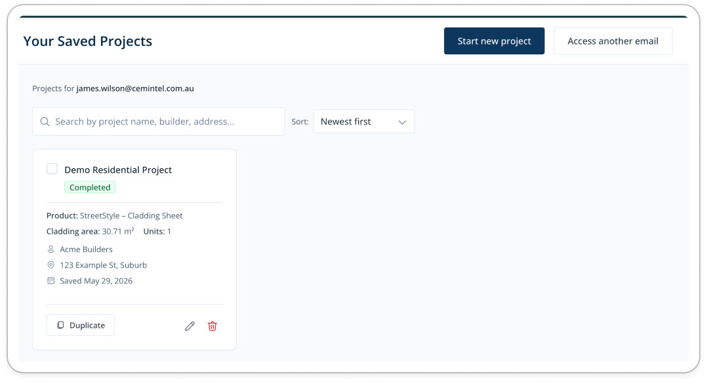
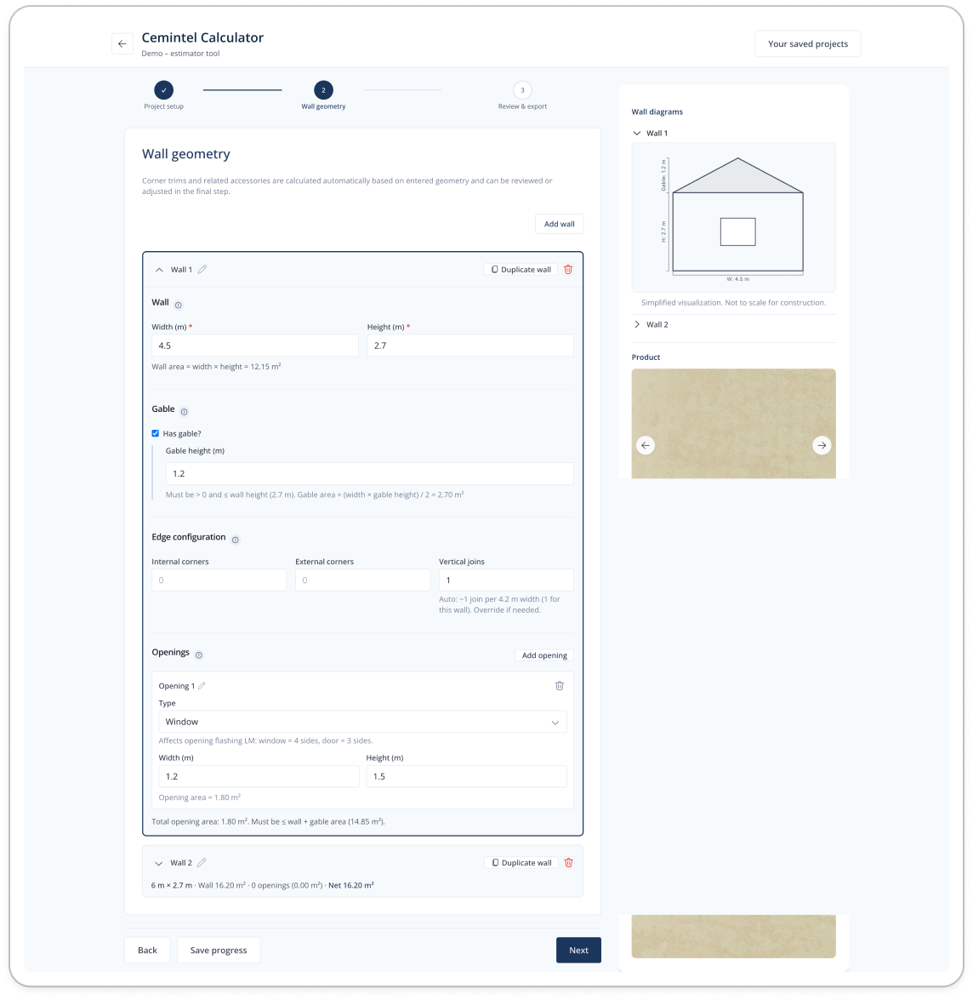
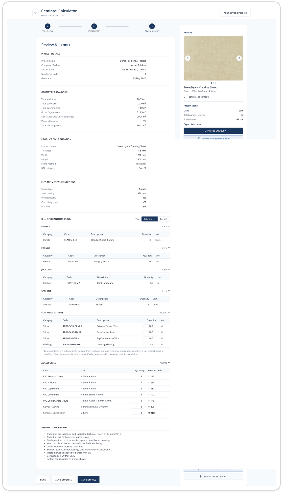

From a calculator
to a workspace.
Cemintel asked Nibble Edge for a cladding estimator that would compete with James Hardie's. The brief was a page long. We took it apart, audited the competitor flow, and shipped something different — a contractor workspace where saving, duplicating, and finishing an estimate takes minutes, not a workday. Designed and built in Cursor so the prototype was the spec.

A short brief
with a long implication.
The ask landed in a single page. Cemintel (a brand of CSR Limited) wanted an estimator for their Streetstyle cladding range that felt more guided, more branded, and more useful than James Hardie's — the de-facto reference everyone in the Australian market opens first. The required ingredients were straightforward: a step-by-step material estimator, a downloadable shopping list, project save / duplicate, and postcode-based supplier search to feed leads back to Cemintel.
Two audiences. Contractors who quote three jobs before lunch and need accuracy, speed, and a believable BOM. Prospective home owners who are scoping a renovation, want to understand “how much cladding does my house need” without learning the trade, and might hand the output to their builder.
The reference
is the problem.
The easy move would have been to ship a prettier version of the James Hardie flow. So I started by actually using it — from product selection through to the final estimation page — on real elevations, on a slow connection, the way a site contractor would. The estimator works; the form builder underneath it is what hurts. Every page mixes inputs with their own outputs, controls double up, and the rules of the page change as you scroll.
I documented four moments where the existing flow loses its user. These four screens became the wedge for everything we changed.




The competitor isn't slow because it lacks features. It's slow because every screen asks you to be the form-builder. The opportunity is to take the form-building away from the user entirely.
Three shifts
that reframed the product.
Rather than redesigning each step of the existing wizard, we changed the unit of work. A cladding job isn't a six-step form, it's a project that lives across days, gets duplicated when the next house on the same street comes up, and ends with a shopping list that the contractor can actually send.
Workspace,
not a wizard.
The home of the product is a project dashboard — list, search, duplicate, archive. The estimator is something you open, not something you start over.
Three steps,
not six.
Product + dimensions + openings collapse into one canvas. Corner / abutment / gable maths happens silently from the geometry. The contractor describes the building once.
A bill of quantities,
with a postcode.
The output is a clean, itemised BOQ — panels, fixings, trims, accessories — not a dense table to decode. Export it as CSV, or route it straight to the nearest Cemintel-stocking dealer matched on the sign-in postcode.
We also made an unusual call upfront: the design and the build would move together. I paired with Cursor AI from week one, treating the working prototype as the source of truth rather than the Figma. Every flow decision was a flow we could click within a day, on real data shapes, on a phone, on a slow connection. That cadence is the only reason a brief that thin produced a product this opinionated.
Open, walk through,
finish.
You sign in, land on a list of projects rather than a blank form, then move through three steps — project setup, wall geometry, review & export. Below, the two framing screens stay small; the three estimator steps get the detail. Hover a feature and the screenshot zooms to the pointer it describes.
Sign in, then
a workspace.
No account walls — an email makes projects findable, and the postcode becomes a GTC-dealer lead. You land on a list of saved estimates (with an empty state that points to the next action), not a blank form. Duplicate the last one for the next house on the same street.


1
2
3
4
Describe the job once.
The maths follows.
Product, panel spec and the conditions that drive material rules all live on one screen — with a running summary so the spec is never out of sight.
Unit multiplierAuto-calc
Building eight identical townhouses? Enter 8 in Number of identical units and the entire estimate scales — every panel, fixing and trim multiplies, and the review page gains a total-project vs. per-unit toggle. Quote a street from one form.
Plain-language tooltips
Every technical field — thickness, wind classification, stud spacing, corrosivity zone, BAL category — carries an ⓘ that explains the term. The contractor skips them; the home-owner finally understands what “C2” means.
Live system configuration
The right rail recomputes as you type — panel size, wind class, frame type, stud spacing — so the spec stays visible without scrolling back up to check what you set.
Dealer hook, from the start
Find nearest GTC dealer ties the project to a stockist immediately, so the lead is warm long before the BOQ exists.

1 2 3 4Plain dimensions in,
a drawing back.
The contractor types width × height; the tool draws the wall and silently runs the corner, join and opening maths that the competitor made you do by hand.
Live wall diagram
Every dimension you enter redraws a to-scale-ish wall — gable, openings and all — so the model is confirmed visually before a single quantity is trusted. No CAD, no second-guessing.
Gable, handled
Tick Has gable? and the area formula is shown inline (width × gable height ÷ 2) and folded straight into the façade total — bounded so it can't exceed the wall.
Corners & joins, auto-derived
Internal / external corners and vertical joins are pre-filled from geometry with the assumption stated — ~1 join per 4.2 m — and editable when the site says otherwise.
Openings drive flashings
A window subtracts its area and adds opening-flashing on four sides; a door, three. The trim schedule updates itself instead of waiting for a footnote.

1 2 3 4The answer, with
nothing buried.
One screen covers the whole estimate: project recap, geometry breakdown, and an itemised bill of quantities split into the categories a merchant actually orders by.
Export & send, two ways
Download the BOQ as CSV for a merchant order, or send it straight to the nearest GTC dealer — the postcode from sign-in closing the loop.
Total project ↔ per unitMultiplier
The unit count from Step 1 powers a one-click toggle: see quantities for the whole job, or for a single unit, without re-entering anything.
Itemised, by category
Panels, fixings, jointing, sealant, flashings & trims, accessories — each with code, description and quantity. Trim figures are geometry-derived but editable for site-specific detailing.
Assumptions, in plain sight
The disclaimers the competitor turned into its loudest element become a calm, honest footer: waste %, what's indicative, what to verify before ordering.
Where it
actually is.
This case study is honest about timing. The prototype was delivered to Cemintel as a clickable, real-data Cursor build — not a Figma mock. The production version is being built on top of that codebase as I write this, which is why the metrics row reads “in flight” rather than the usual portfolio numbers.
Three surfaces (dashboard, canvas, shopping list) running on the agreed data model. Handed to Cemintel's internal team in May 2025.
The Cursor prototype became the spec — Cemintel's engineering team is extending it for full SKU coverage, supplier database, and authenticated multi-project save.
Targeting a closed beta with 12 contractors across VIC and NSW. Once live numbers are in, this section becomes a proper Outcomes block.
What a thin brief
actually asks for.
A one-page brief isn't a small ask. It's a request for opinion — the client has decided what they want and is asking the designer to decide how. I learned to treat that gap as a feature: spend the first week doing the audit no one asked for, come back with a point of view, then negotiate scope from there. The competitor teardown did more for this project than any Figma file I could have shown.
Pairing with Cursor changed how I designed. I stopped drawing screens and started writing behaviour. The Figma file got smaller. The prototype got the budget. Where it got hard was data ambiguity — the supplier database is messy and inconsistent across postcodes, and a live recompute is great until the rule is fuzzy. We had to design a separate visual treatment for “the estimator has a hunch” vs. “the estimator is certain.” That distinction now drives the entire UI affordance set on the canvas.